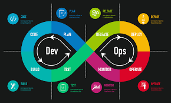

Full-Stack Development

Knowledge of both frontend and backend technologies is crucial. Skills in frameworks like React.js, Angular, Node.js, and databases (SQL, NoSQL) remain in demand.
Learn MoreDevOps & Cloud Engineering
DevOps roles focus on CI/CD pipelines, containerization (Docker), orchestration (Kubernetes), and cloud infrastructure automation with Jenkins, Terraform, and Ansible.
Learn MoreAI & Machine Learning

AI/ML developers using frameworks like TensorFlow and PyTorch are in demand for building intelligent systems, data analysis, and automation.
Learn MoreMobile App Development
Growth in mobile development is driven by cross-platform technologies like Flutter and React Native, and native Android (Kotlin) and iOS (Swift) development.
Learn MoreCybersecurity

With increasing digital threats, cybersecurity professionals are needed to secure applications and networks with encryption and vulnerability assessments.
Learn MoreWeb3 & Blockchain

Blockchain and Web3 technologies such as Solidity for smart contracts and cryptography are gaining traction for decentralized applications (dApps).
Learn More